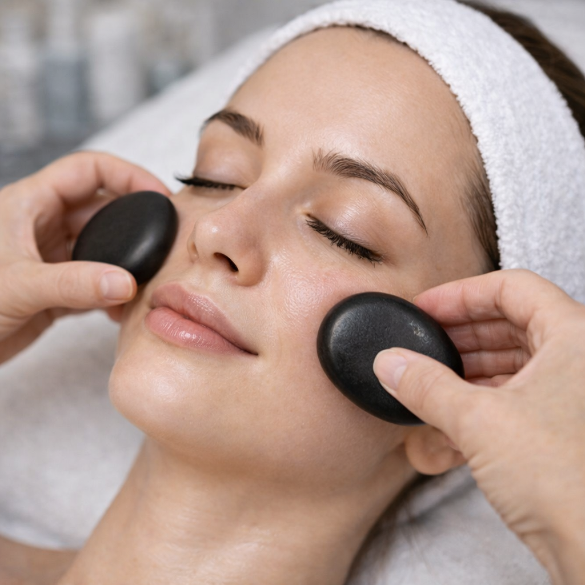

A massagem com pedras quentes é um tratamento relaxante que utiliza pedras aquecidas para proporcionar alívio de tensões musculares, relaxamento profundo e bem-estar.

A técnica de massagem com pedras quentes combina movimentos de massagem com o uso de pedras aquecidas posicionadas em pontos estratégicos do corpo. O calor ajuda a relaxar a musculatura, melhorar a circulação sanguínea e proporcionar uma sensação intensa de relaxamento.
Indicado para pessoas que buscam relaxamento, alívio de tensões musculares e um momento de cuidado e bem-estar através de uma experiência terapêutica e relaxante.
← Voltar para procedimentos